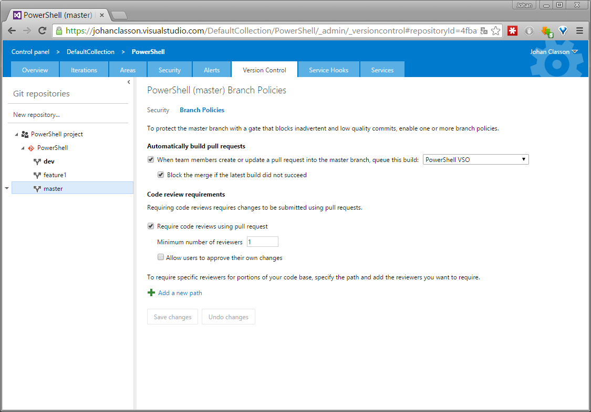
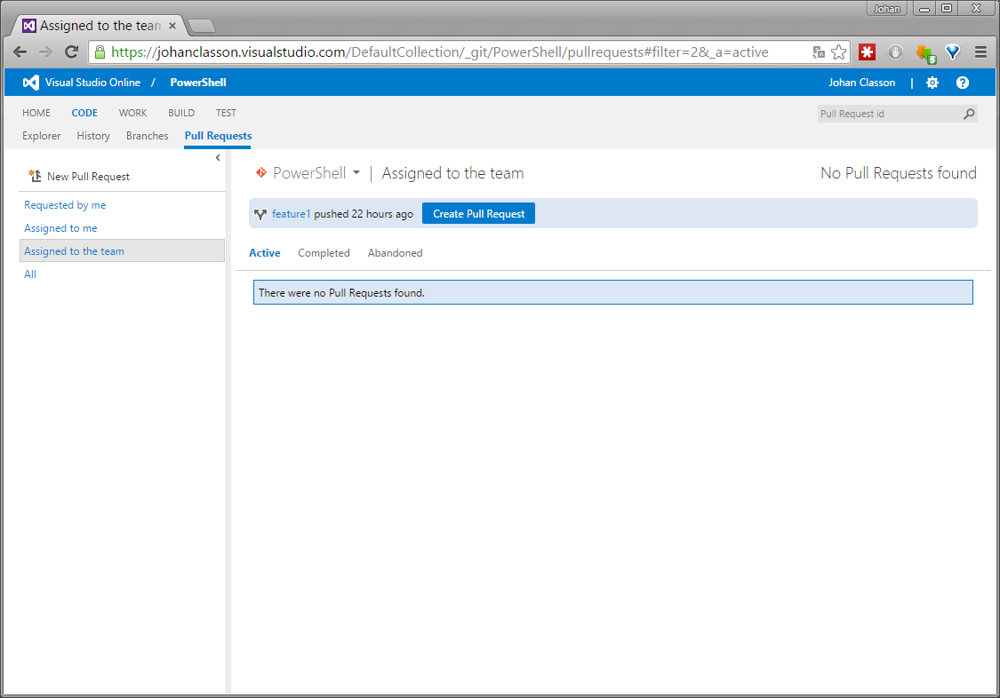
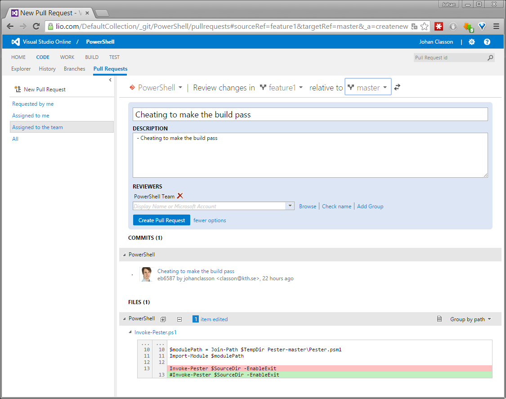
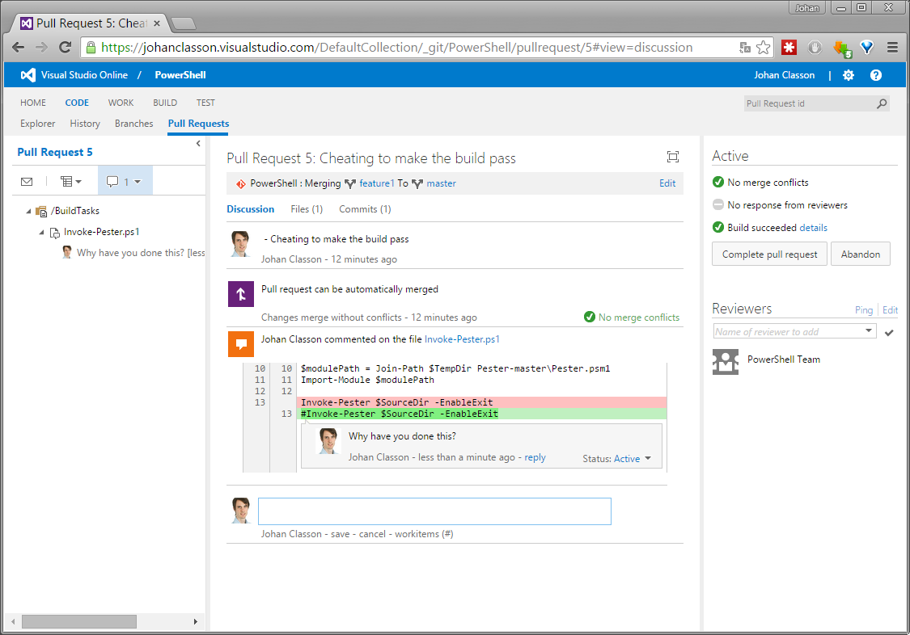

We all agree on that doing code review is a good thing. But you need a natural way to conduct code reviews in your team workflow for them to happen. One such is to review all code before it’s pushed to the main branch. In a distributed version control system such as Git you can create a pull request to initiate such a review.
GitHub has long supported a nice graphical experience working with pull requests, and TFS and Visual Studio Online (VSO) have just recently caught up. With the release of TFS 2015, they are now in my opinion quite similar in functionally all of them.
What is of importance when reviewing someone else’s changes is, aside from being able to comment on them, to also to know if the build still pass if they are applied. Obviously, there is no use to start the review if the changes can’t be compiled. Nor if they break any automatic tests.
In this post I will use the same PowerShell repository as in my previous post. I will use VSO, but I could just as well have used TFS 2015. For the moment, they are identical with regards to pull request functionality.
Support for Pull Requests in TFS 2015, VSO and GitHub
If you have your automatic builds run by a build agent hosted in VSO for a Git repository which is also hosted in VSO, it is no surprise that it works out of the box.
But what about if you have your repository in GitHub? Triggering VSO builds for pull requests in a GitHub repository is something you can do, but there is no built in functionally for reporting the build results to the pull request. Not yet anyway.
If you have your code on GitHub, then moving the source code to VSO might be something that you are not prepared to do. If so, you can host your own build server. There exists plugins for both Jenkins and TeamCity for reporting build results to a pull request on GitHub.
When preparing this post, pushing the GitHub branches of my test repository to VSO was nothing I had any objections against. Pushing all branches to another remote host can be done with the following commands:
1 | git remote add vso https://johanclasson.visualstudio.com/DefaultCollection/_git/PowerShell |
Configuring Automatic Building of Pull Requests
First create a build definition for your branch, if you have not already got one. Next head over to the team project settings page. Under the Version Control tab, you can set up something called branch policies.
Under Automatically build pull requests you can select the build definition that you want to be triggered.
Regarding pull requests in TFS 2015 and VSO, you can do some things which you can’t in GitHub. Under Code review requirements you can enforce that all commits to a branch have to be made through pull requests.
By default, the user who has made a pull request can’t approve it. If you really want this to be possible you can change this setting here as well.

With Add a new path you can require specific reviewers for portions of your code base. For example if you got sensitive files in a specific folder, you can be sure that pull requests that change files in that folder is reviewed by an expert in your team.
Working with Pull Requests
If you have read my previous post you know that in my test repository, several of the automatic tests failed. In a villainous attempt to fix this, I created a feature1 branch, and committed and pushed a change to it.
Create Pull Requests
Under the CODE - Pull Requests tab, you can either click New Pull Request in the top left, or the blue Create Pull Request quick button in the middle.

This opens a page where you can edit details of the pull request which it’s going to be created. Make sure that you select the correct target branch, next to relative to. The description field is prefilled with the commit comments from the source branch.

As you can see, I’ve cheated by commenting out the command to run the automatic tests. For sure, that would make no tests fail!
Review Pull Requests
Luckily some decent person is likely to review the pull request before it is merged. Under CODE - Pull Requests you can see active pull requests. Clicking the pull request will open it in review mode, looking like this:

There you can comment on source code lines and also place general comments. Note the Build succeeded badge in to top right, indicating that all is well. But in this case, if you inspect the details it will be obvious that no tests have been run.
One could click Complete pull request to accept- and have it merged to the main branch. Then it is a good idea to click Delete source branch to remove the branch, which probably will no longer be used.
But in this case one should click Abandon, and give the person who made the request a lesson in code ethics…